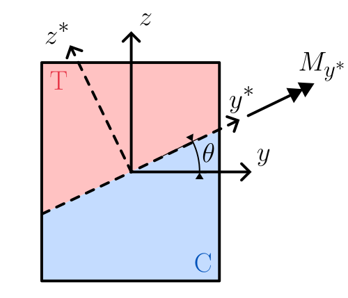
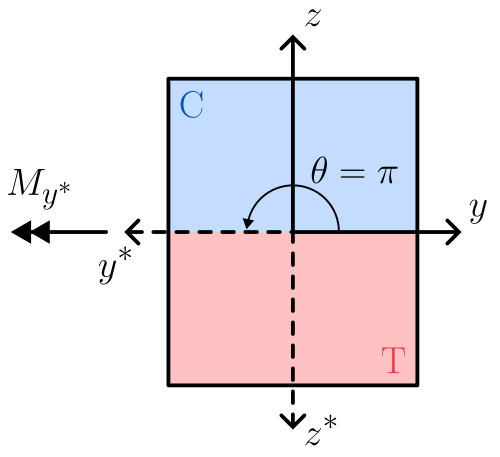
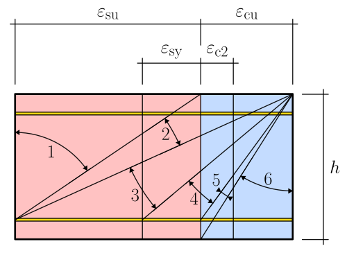
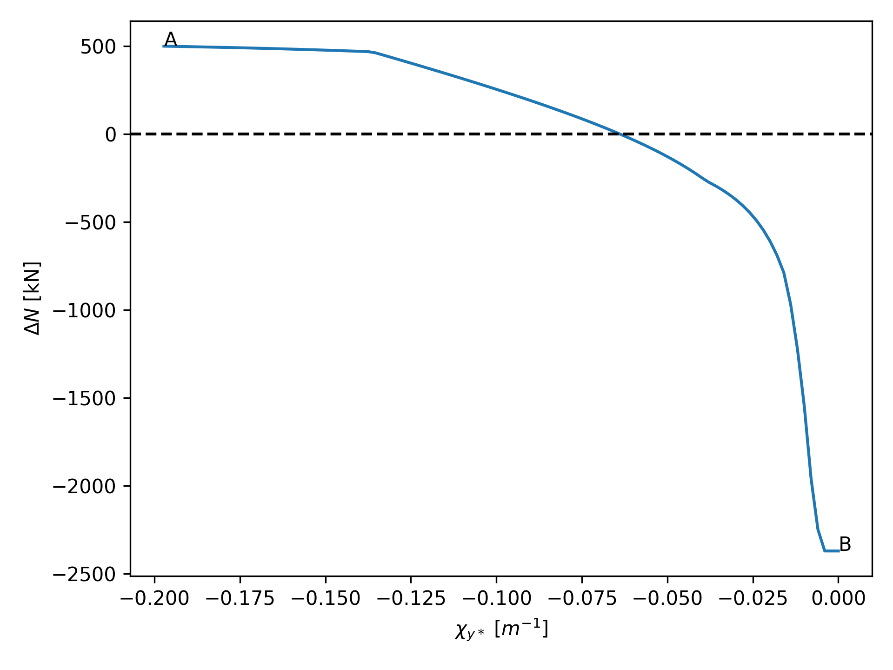
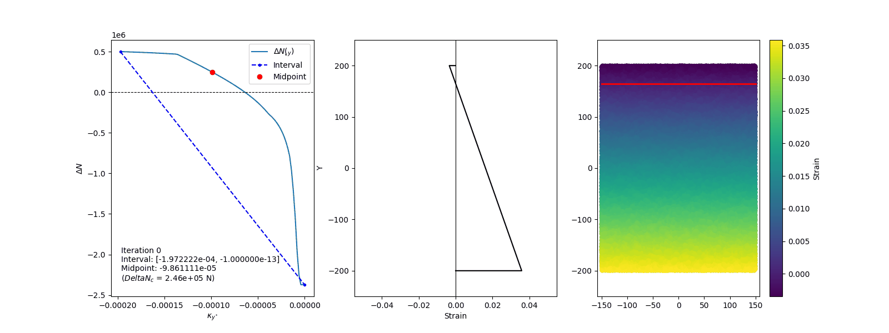
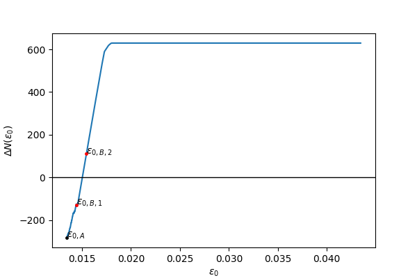
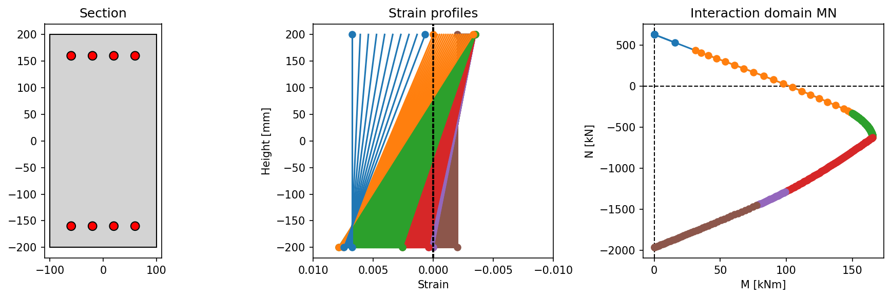
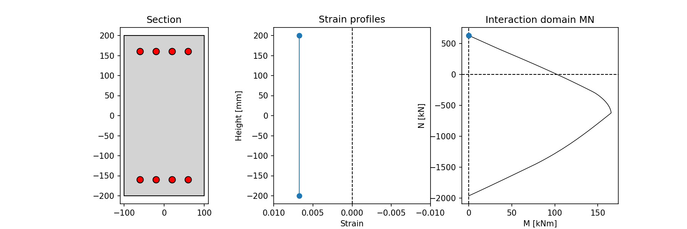
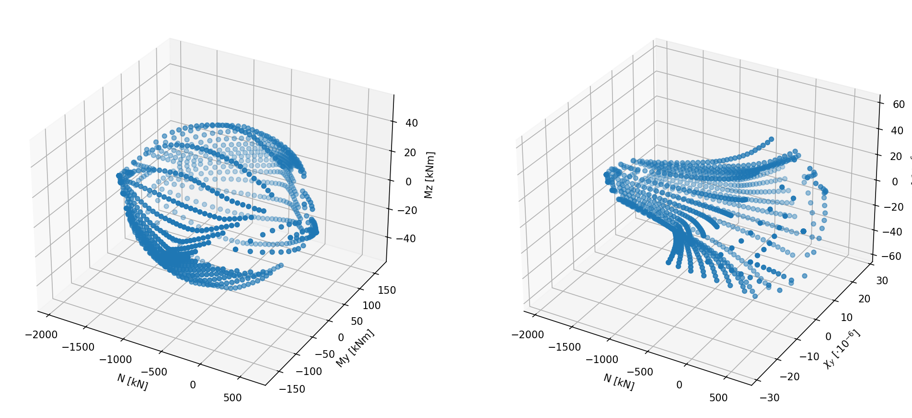

Section calculators evaluate the structural response based on section properties and applied loads. They integrate results from the geometry and material models to provide insights into section performance by using a specific section integrator.
The section calculator contains the methods that permits to handle a structual analysis for a cross section. For instance it is possible to compute the bending strength given the axial force, or to compute the moment curvature, or to compute the strength domain. The outputs of those methods are represented as ad-hoc defined results objects which contains the data and the methods to further process them.
Attention
Note that in the current implementation both material constitutive laws and section are unitless. It means that user should choose a consistent set of units, like N for forces and mm for lengths; in this way the stresses will be in MPa and the moments in Nmm.
Pay attention that default-defined constitutive laws by material classes work with the units defined by the considered code, e.g. MPa for EC2 or MC2010.
With this algorithm, StructuralCodes computes the bending strength of the section given the axial load (positive in tension and negative in compression) and an angle of the neutral axes respect to the y axis.

The reference system used for computing bending strength; C indicates the compressed portion, T indicates the stretched portion.¶
In the rotated reference system \(y^*z^*\), the bending strength in terms of positive \(M_{y^*}\) is computed.
Note
According to such definition, to compute the bending strength for a section with top fibers in compression and bottom fibers in tension, the angle theta should be equal to \(\pi\).

Rotated Coordinate system to be used for computing uniaxial bending with bottom fibers stretched and top fibers compressed.¶
According to classic RC theory[1], the deformations domains could be represented as following (with domains from 1 to 6 moving respectivelly from pure tension to pure compression).

Ultimate deformation domains for uniaxial bending with or without axial force [1].¶
The algorithm developed can be summarized as follows:
Rotate the section: the section is rotated by the given angle theta. In this new CRS \(y^*z^*\), the problem becomes uniaxial bending about the \(y^*\) axis
Axial load check: verify if axial load is within the admissible range of axial loads (in tension and compression). This ensures the section can withstand the applied aixal load without failure.
Ultimate strain profile: find a strain profile that reaches the utimate strain for at least one of the materials. The found strain profile must guarantee equilibrium with external axial load. This is computed with an iterative algorithm based on bisection method.
a. The internal axial load, defined by the balanced failure condition (i.e., the simultaneous reaching of ultimate strain in both the stretched and compressed materials), is evaluated by integrating the strain profile.
b. If the internal axial load is greater than the external axial load, the neutral axis needs to be lowered, indicating excessive tension in the section. If the internal axial load is lower, the neutral axis should be raised to reduce compression.
c. The strain profile is then adjusted by changing the curvature, pivoting on either the top or bottom chord. The goal is to balance the axial load and reach a solution that satisfies equilibrium. This is done solving the equation \(\Delta N(\chi_{y^*})=0\) where \(\Delta N(\chi_{y^*})=N_{ext}-N_{int}(\chi_{y^*})\). For instance the function could be something like depicted in the following picture.

The function \(\Delta N(\chi_y^*)\) the searched curvature is the intersection with the horizontal axis (i.e. when \(\Delta N(\chi_y^*) = 0\)).¶
Bisection algorithm permits to find the zero of the function within some iterations.

Bisection algorithm for finding the strain plain that is in equilibrium with extenal axial force.¶
Final Computation of Bending Strength: once the equilibrium strain profile is found, the bending strength is calculated by integrating the obtained strain profile. This results in the final bending strength in the rotated coordinate system described in step 1, which is then transformed back to the original coordinate system.
With this algorithm, StructuralCodes computes the moment-curvature of the section given the axial load (positive in tension and negative in compression) and an angle of the neutral axes respect to the y axis (see figure above).
The algorithm works with the following steps:
Rotate the section: the section is rotated by the given angle theta. In this new CRS \(y^*z^*\), the problem becomes uniaxial bending about the \(y^*\) axis.
Axial load check: verify if axial load is within the admissible range of axial loads (in tension and compression). This ensures the section can withstand the applied aixal load without failure.
If not provided, compute array of curvatures: if curvatures are not provided, the array of curvatures is computed. First the yield and ultimate curvatures are computed and the array of curvatures is computed with some points before yielding, and other points from yielding to ultimate condition. Ultimate curvature represents the last value computed automatically. If the user wants to go beyond that point, he should provide a custom curvatures array. For more information, refert to the api.
For each curvature value compute moment: for each value of the curvature, the algorithms finds the strain profile that is in equlibrium with external axial force and computes the corresponding value of moment.
To do so, the algorithm proceeds iterativelly, for a fixed value of curvature, solving the equation \(\Delta N(\varepsilon_0)=0\) where \(\Delta N(\varepsilon_0)=N_{ext}-N_{int}(\varepsilon_0)\) and \(\varepsilon_0\) is the axial strain at coordinates \((0, 0)\) of the section. The iterative solution is performed with a bisection algorithm applied to the range \([\varepsilon_{0,A}, \varepsilon_{0,B}]\) where \(\varepsilon_{0,A}\) is the axial strain from the last step and \(\varepsilon_{0,B}\) is found by a quick pre-computation algorithm whose aim is finding the range where there is one solution. The bisection algorithm is then applied and the variable \(\varepsilon_0\) is detemined within a fixed tolerance.
Note
Find the range to which apply bisection
Starting with \(\varepsilon_{0,A}\) and the corresponding value of \(\Delta N(\varepsilon_{0,A})\), the value \(\varepsilon_{0,B}'\) is found using a fast pre-find algorithm. This algorithm uses the following exponential law for evaluating the tentative value of \(\varepsilon_{0,B,i}\):
In this way, \(\varepsilon_{0,B}\) increases in fast way within very few iterations (generally 2-3 iterations are enough).
The value of \(\Delta N(\varepsilon_{0,B,i})\) is computed and whenever \(\Delta N(\varepsilon_{0,A}) \cdot \Delta N(\varepsilon_{0,B,i}) < 0\) the algorithm stops having found the range \([\varepsilon_{0,A}, \varepsilon_{0,B}]\) where the bisection algorithm is applied. The use of this algorithm permits to find a good range where bisection algorithm is applied in an efficient way without too many iterations.
Graphically this can be seen in the figure below, where the function \(\Delta N(\varepsilon_0)\) is plotted indicating the value \(\varepsilon_{0,A}\) from the previous step and the two iterations needed to find \(\varepsilon_{0,B}'\).

The function \(\Delta N(\varepsilon_0)\) during \(i\)-th step of moment-curvature computation: application of the pre-find algorithm to select the range where bisection is applied.¶
Then, the usual bisection algorithm is adopted to find the value \(\varepsilon_0\) for which \(\Delta N(\varepsilon_0) = N_{ext} - N_{int}(\varepsilon_0)\) is sufficiently near to 0.
With this algorithm, StructuralCodes computes the two dimensional \(N\)-\(M_y^*\) representing uniaxial bending respect to the rotated reference system \(y^*z^*\).
The algorithm works with the following steps:
Rotate the section: the section is rotated by the given angle theta. In this new CRS \(y^*z^*\), the problem becomes uniaxial bending about the \(y^*\) axis.
Compute the list of ultimate strain profiles: according to classic RC theory, the failure domain can be grouped into 6 differen domain, from 1 to 6, moving respectivelly from pure tension to pure compression. (see figure here). The algorithm created a list of all possible failure strain profiles within the six domains. User can customatize the discretization used (see api).
Integrate stresses for all computed ultimate strain profiles: for all the strain profiles determined in step 2, the stresses are integrated computing the pair \((N, M_y^*)\) that represent a point in the ultimate domain profile.
This is represented by the following image that shows for a rectangular RC section the ultimate strain profiles computed and the corresponding MN interaction domain. The different colors correspond to different domains. The same is visible in the animation here

Ultimate strain profiles for uniaxial bending and corresponding interaction domain.¶

Animation of ultimate strain profiles for uniaxial bending and corresponding interaction domain.¶
Rotate back to original \(yz\) coordinate system: the pair of values \((N, M_y^*)\) is rotated back obtaining the triplet \((N, M_y, M_z)\)
With this algorithm, StructuralCodes computes the full three dimensional \(N\)-\(M_y\)-\(M_z\) interaction domain.
To do so, the algorithm loops different values of angle \(\theta_i\) of neutral axes respect axis \(y\), going from \(0\) to \(2\pi\) (the number of discretizations can be customized with the parameter num_theta whose default value is equal to 32).
For each value of the angle \(\theta_i\), the algorithm proceeds as the case of unixial bending (here).
The final result is represented by the data structure collecting for all points the triplet \((N, M_y, M_z)\) and the corresponding ultimate strain profile.

Left: ultimate domain NMM. Right: corresponding points in terms of N, \(\chi_y\), \(\chi_z\).¶
With this algorithm, StructuralCodes computes the two dimensional \(M_y\), \(M_z\) interaction domain for a given value of external axial load \(N\).
The algorithm works with the following steps:
Create an array of angles: the algorithm creates an array of linearly spaced values of angle \(\theta\) of neutral axis respect to axis \(y\).
Compute bending strength: for each value of the angle \(\theta_i\), the bending strength (with the iterative algorithm described here) for the given value of external axial load \(N\) is computed obtaining a pair \((M_{y,i}, M_{z,i})\) that represent the point in the failure domain. Doing this for all values, the entire \(M_yM_z\) failure domain is created.
Note
In the previous cases (i.e. NM domain and NMM domain) we simply integrate a bunch of strain profiles obtaining a set of points in the interaction domain. This is a very fast and no iterative solutions are needed. A side effect of this choice is that the obtained domain points are not controlled in terms of a constant external axial forces, see e.g. this figure.
For this reason the computation of MM interaction domain for a given value of axial load \(N\) does not work in the same way. The side effect of this algorithm is that it is significantly slower since each point of the failure domain is determined with an iterative process.
Hint
Using this method it is possible to loop from minimum to maximum axial load that the section is able to carry and construct a nice structured version of the failure domain. Of course this operation is pretty slow compared to the direct computation of NMM domain.
Syntax
Create many slices of MM interaction domains to have a full NMM domain.¶
importmatplotlib.pyplotaspltimportnumpyasnpfromstructuralcodes.codesimportset_design_codefromstructuralcodes.geometryimport(RectangularGeometry,add_reinforcement_line,)fromstructuralcodes.materials.concreteimportcreate_concretefromstructuralcodes.materials.reinforcementimportcreate_reinforcementfromstructuralcodes.sectionsimportGenericSection# Set parametersheight=625width=400cover=50diameter_rebars=25n_bars=3fcd=0.85*35fyd_rebars=500ftd_rebars=fyd_rebars# 520 / 1.15Es=200000eps_ud=3e-2/0.9d1=cover+diameter_rebars/2# Materialsset_design_code('ec2_2004')concrete=create_concrete(fcd)reinforcement=create_reinforcement(fyk=fyd_rebars,Es=Es,ftk=ftd_rebars,epsuk=eps_ud)# Assemble sectionconcrete_geometry=RectangularGeometry(width,height,concrete)z_value=-height/2+d1forz_valuein(-height/2+d1,height/2-d1,):concrete_geometry=add_reinforcement_line(geo=concrete_geometry,coords_i=(-width/2+d1,z_value),coords_j=(width/2-d1,z_value),diameter=diameter_rebars,material=reinforcement,n=n_bars,)section=GenericSection(concrete_geometry,integrator='fiber',mesh_size=0.001)# Perform the analyses and create the plotfig=plt.figure()ax=fig.add_subplot(111,projection='3d')n=np.linspace(section.section_calculator.n_min,section.section_calculator.n_max,25)forn_iinn:res=section.section_calculator.calculate_mm_interaction_domain(n=n_i)ax.plot(np.ones_like(res.m_y)*res.n*1e-3,res.m_y*1e-6,res.m_z*1e-6)ax.set_xlim(xmin=section.section_calculator.n_min*1e-3,xmax=section.section_calculator.n_max*1e-3,)ax.set_ylim(ymin=-600,ymax=600)ax.set_zlim(zmin=-600,zmax=600)ax.set_xlabel('N [kN]')ax.set_ylabel('My [kNm]')ax.set_zlabel('Mz [kNm]')
With this algorithm, StructuralCodes computes the strain profile (represented by the triplet of values \(\varepsilon_0\), \(\chi_y\), \(\chi_z\) that are respectively the axial strain corresponding to point \((0,0)\), and the curvatures with respect to axes \(y\) and \(z\)) for a given set of external forces \(N_{\mathrm{ext}}\), \(M_{\mathrm{y,ext}}\), \(M_{\mathrm{z,ext}}\), with an iterative solution algorithm based on Newton-Rhapson method.
The vector containing the internal force \(N\), \(M_{\mathrm{y}}\), \(M_{\mathrm{z}}\) is obtained by integrating the stresses over the cross-section area. These quantities can be expressed as follows:
\[\begin{split}\begin{aligned}
N &= \int_A \sigma(y,z) \, dA \\
M_y &= \int_A \sigma(y,z) \, z \, dA \\
M_z &= -\int_A \sigma(y,z) \, y \, dA
\end{aligned}\end{split}\]
or, in vector form, as:
(1)¶\[\begin{split}\begin{bmatrix}
N \\
M_y \\
M_z
\end{bmatrix}
=
\int_A
\begin{bmatrix}
1 \\
z \\
-y
\end{bmatrix}
\sigma(y,z)\, dA\end{split}\]
The strain \(\varepsilon(y,z)\) can be expressed as a function of the axial deformation \(\varepsilon_0\) and the curvatures \(\chi_y\) and \(\chi_z\) as:
The row vector
\(\mathbf{B}(y,z) = \begin{bmatrix} 1 & z & -y \end{bmatrix}\)
is the strain-displacement vector that maps the generalized strain vector
\(\boldsymbol{\varepsilon}_g = \begin{bmatrix} \varepsilon_0 & \chi_y & \chi_z \end{bmatrix}^T\)
to the pointwise axial strain according to (3).
Hint
The sign appearing in equation (2) are explained considering the sign convention shown here.
According to such convention a positive \(\chi_y\) stretches top fibers and compresses bottom fibers (i.e. hogging), so when multiplying positive \(z\) coordinates (points towars top edge) the final strain is positive. A negative \(\chi_y\) stretches instead bottom fibers (i.e. sagging), so when multiplying positive \(z\) coordinates (points towards top edge) the final strain is negative.
A similar consideration can be made for the other curvature \(\chi_z\)
The stress \(\sigma(y,z)\) can be related to the strain \(\varepsilon(y,z)\) through the consitutive law (in general non-linear), according to:
The vector \(\boldsymbol{\varepsilon}_g\) represent the unknown strain profile that we want to find for the given external forces \(\mathbf{f}^{ext}\). To do so, a numeric method like Newton-Raphson can be used.
To this aim, the residual vector can be written as:
The iterative process can continue up to a certain convergence criterion is met, like for instance up to when the norm of the residual vector \(\|\mathbf{R}(\boldsymbol{\varepsilon}_g^{k+1})\|\) is smaller then a selected tolerance.
The Jacobian matrix \(\mathbf{J}\) is basically the tanget stiffness of the section and is a 3x3 matrix given by:
(15)¶\[\begin{split}\begin{aligned}
\mathbf{J}
&=
\int_A
\dfrac{d \sigma}{d \varepsilon}
\begin{bmatrix}
1 \\
z \\
-y
\end{bmatrix} \cdot
\begin{bmatrix} 1 && z && -y \end{bmatrix}
\, dA =
\\
&=
\int_A
\dfrac{d \sigma}{d \varepsilon}
\begin{bmatrix}
1 & z & -y \\
z & z^2 & -y z \\
-y & -y z & y^2
\end{bmatrix}
\, dA
\end{aligned}\end{split}\]
where \(\dfrac{d \sigma}{d \varepsilon}\) represents the tangent modulus of the constitutive law.
Hint
For a linear elastic material, \(\dfrac{d \sigma}{d \varepsilon}\) is constant and equal to \(E\), therefore the tangent stiffness matrix of the section can be written as the usual stiffness matrix:
First moment about z-axis: \(S_y = \int_A y \, dA\)
\(S_z\)
First moment about y-axis: \(S_z = \int_A z \, dA\)
\(I_{yy}\)
Moment of inertia about y-axis: \(I_{yy} = \int_A z^2 \, dA\)
\(I_{zz}\)
Moment of inertia about z-axis: \(I_{zz} = \int_A y^2 \, dA\)
\(I_{yz}\)
Product of inertia: \(I_{yz} = \int_A y z \, dA\)
\(E\)
Young’s modulus (constant for linear elastic material)
The algorithm implemented in StructuralCodes is basically as above described, with the possibility of using also the modified Newton-Rhapson with initial tangent (setting initial=True). Further the user can set the maximum number of iterations (set to 10 by default) and the tolerance (set to 1e-6 by default).